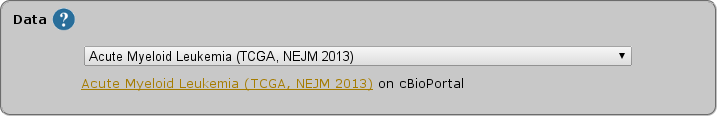
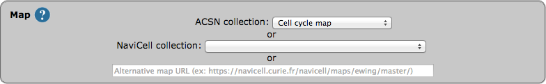
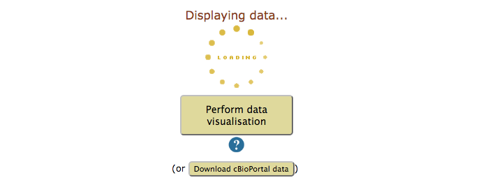

NaviCom tutorial
Data selection
Select a study from cBioPortal. The list of studies is optained through the cBioPortal API, and thus contains all studies available from cBioPortal at the moment.

NOTE: TCGA provisional studies have not been published yet, and can be subject to restriction concerning their use in publication.
NaviCell map selection
Select a map from the set of curated maps of the Atlas of Cancer Signaling Network, or provide an URL to another NaviCell map.

Display mode
Select the way the data will be displayed on the NaviCell map. Each display mode has been designed to answer a specific biological question using specific data.

- Focusing on methylation and transcription provides an overview of the transcriptionnal state of the sample. It displays transcriptomic data as map staining, to see the transcription levels of each gene, and methylation data as glyph size, to assess the transcriptionnal activity of the gene.
- Focusing on mutations and copy number alteration provides an overview on genetic abberations of the sample. It displays copy number variation as map staining, to see the number of copies of each gene, and the mutations frequency as glyph size, to get an idea of the degree of alteration of each gene.
- The complete display representation aims at displaying as much of the data as possible on the map. It allows the evalutation of the coherence of the various type of data, and to see any striking signal in any type of data. It displays mRNA, miRNA and proteomic data, as well as mutation frequency as glyph size, copy number alteration as map staining and methylation data as barplots.
- The complete export option is not directly a display function, but rather exports the entire cBioPortal dataset on the NaviCell map to allow the user to visualize it in a personnalized way.
Processing
After validation of the visualisation, a loading symbol will appear on the NaviCom page, which will terminate once the cBioPortal data have been downloaded by the navicom server.

If you get a 'Gateway TimeOut' error, wait a few minutes and try again, chances are the data you asked for were too big to be downloaded in less than 5 minutes and were not cached.